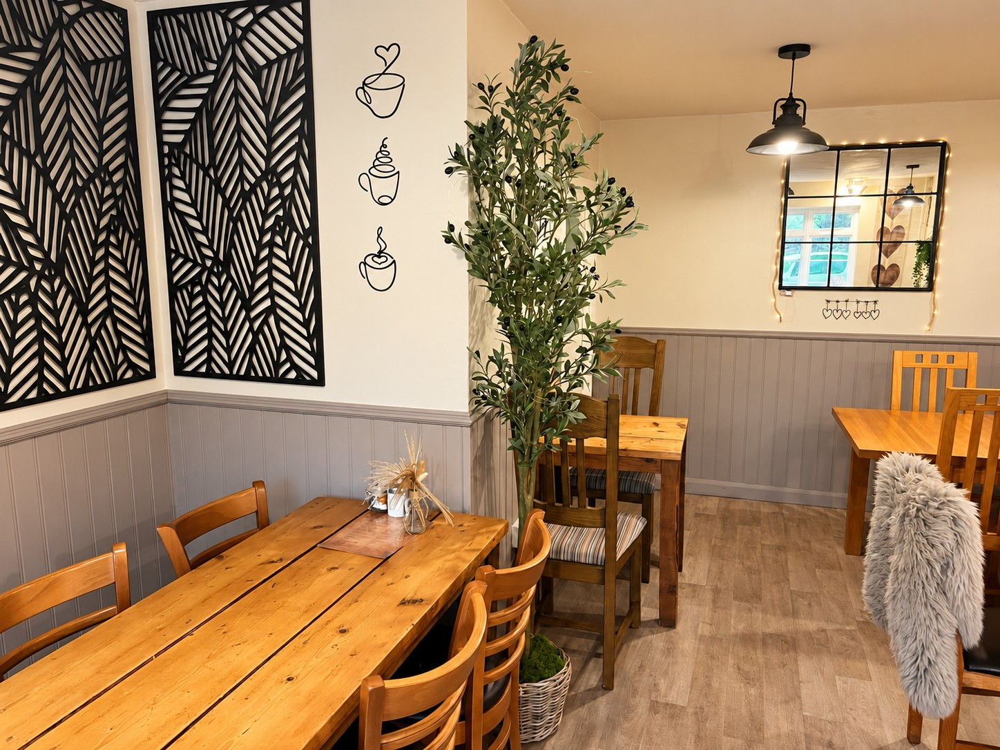
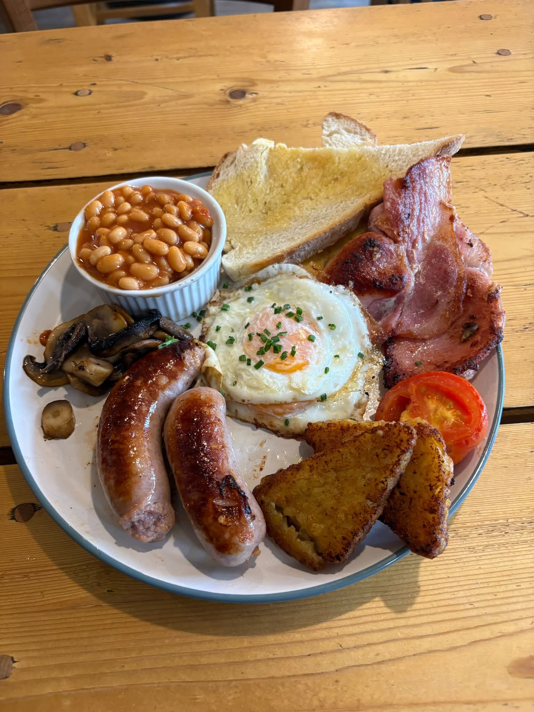
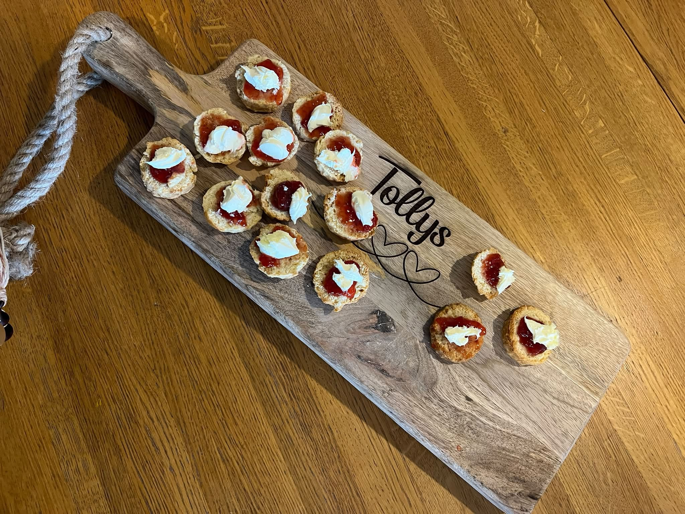

NOW OPEN FOR BUSINESS
A little pause.
A warm welcome.
A taste of Tolly’s.
Your local cafe in the heart of Bishops Cleeve. Pop in, pull up a chair, and make yourself at home.
Tarlings Yard · Bishops Cleeve

SETTLE IN AT TOLLY’S
Good food.
Lovely company.
From a breakfast catch-up to a sweet little afternoon pause, we’d love to welcome you to Tarlings Yard.


PLAN A LITTLE VISIT
We’ll put
the kettle on.
For early November 2026, we’ll be keeping the same opening hours (subject to change) as Gwen’s Cafe.
Opening times (subject to change).
Please check our latest social updates before you travel.
Opening hours (subject to change)
EARLY NOVEMBER 2026| Monday – Friday | 8am – 4pm |
|---|---|
| Saturday | 9am – 1pm |
| Sunday | Closed |
TUCKED AWAY IN TARLINGS YARD
Your next stop?
Right here.
Tolly’s CafeTarlings Yard
Bishops Cleeve, Cheltenham
GL52 8RN, United KingdomGet directions View on OpenStreetMap
Tolly's Cafe, Tarlings Yard, Bishops Cleeve. Open location map.
Find Tolly's in Tarlings Yard, just off Church Road.
LET’S KEEP IN TOUCH
A little more Tolly’s
in your day.
Follow us on Facebook and Instagram for news and any changes to our opening times (subject to change). Turn on notifications there to keep up with our latest posts.
Or say hello: hello@tollys.uk